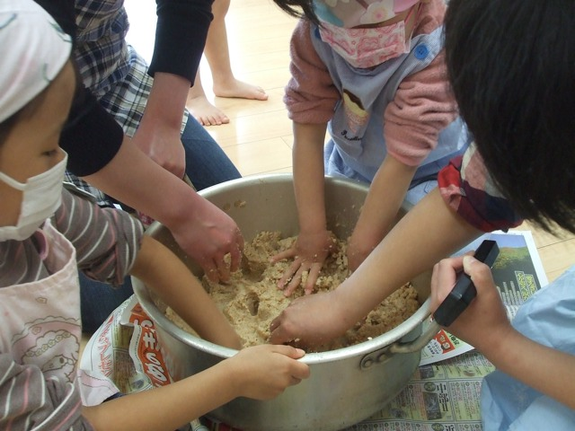
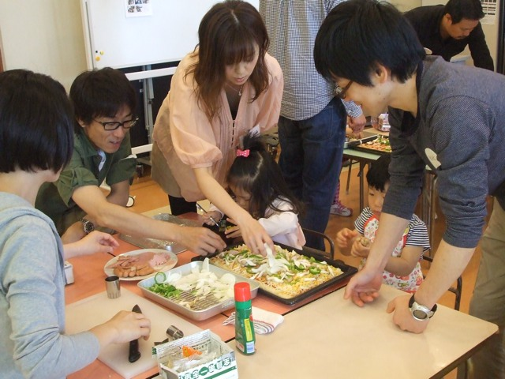
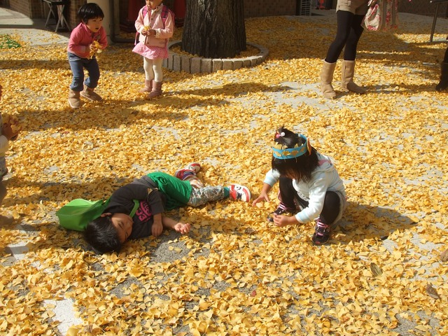

募集要項
1 教育理念

「神に愛されていることを喜ぶ。人に愛されていることを喜ぶ。」
ひとりひとりが神から命を賜り、神に愛されているかけがえのない存在であることを知り、神から与えられた賜物を活かし成長していくことを目指しています。
主題聖句
『わたし（神）の目にあなたは価高く、貴い。
私はあなたを愛す。』
（イザヤ書43章4節）
2 募集対象
2歳児クラス
2013年4月2日時点で2歳の子どもとその保護者
（保護者も一緒に参加していただきます。）
定員 7組 募集 7組
3歳児クラス
2013年4月2日時点で3歳の子どもとその保護者
（子どもの状況に合わせて母子分離していきます）
定員 7組 募集 5組
3 活動曜日･時間

2歳児クラス
毎週 水曜日（8月は休み）
9:30～11:45
3歳児クラス
毎週 月・水・金 (8月は休み)
9:30～11:45
秋学期よりお弁当日 週1回
9:30～13:00
降園後も一部施設を開放
教会学校（自由参加・２歳半～）
毎週日曜日 8:50～9:45
4 費用
入会費（保険代など）
2歳児 3,000円
3歳児 5,000円
月会費（おやつ･教材費など）
2歳児 毎月2,000円
3歳児 毎月6,000円
5 主な活動

自由遊び
（保育室や園庭で、好きな遊びを楽しみます。）
親子で遊ぶプログラム
（身体を使った遊び･制作など）
季節の遊び
（探検･水遊びなど）
6 一日のプログラム例
（日によって変更する場合もあります）
9:15～ 9:30
登園
9:30～
自由遊び
制作や運動遊び･季節の遊びなど
11:00～
おやつ
11:20～11:45
礼拝・帰りの会
（絵本読み聞かせ、手遊び、歌など）
11:45
降園
（絵本貸し出し）
7 服装・もちもの（指定のものは特にありません）
運動しやすい服装（汚れても支障ないもの）
運動靴
帽子
手ふきタオル
コップ
かばん（タオル、コップが入るもの）
着替え（スモック）
保護者の方も運動しやすい服装でお願いいたします。
すべての持ち物に記名をお願いいたします。